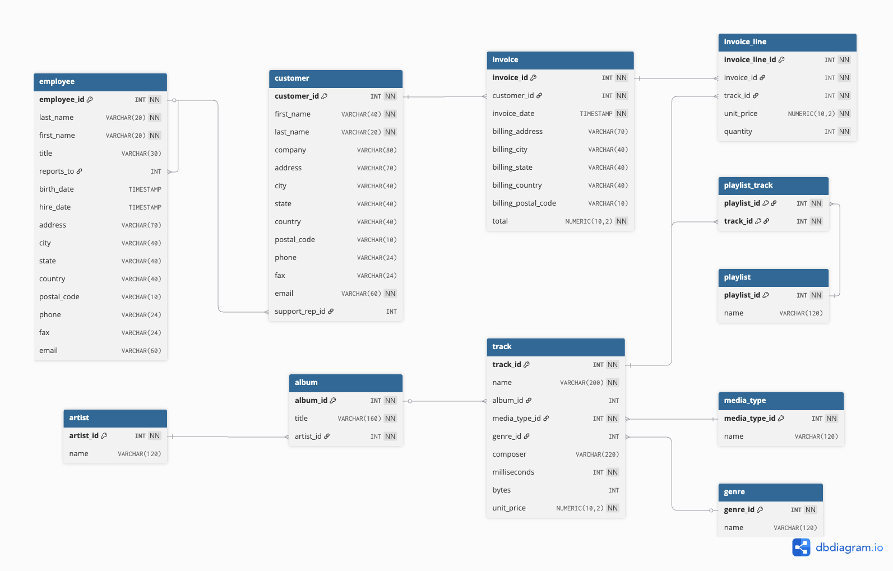

Base fictícia de uma loja de música digital, montada a partir da biblioteca do iTunes. São 11 tabelas cobrindo catálogo, clientes, funcionários e faturamento.
.sql com todas as consultas e um .xlsx com todas as respostas.
customer_id, invoice_date, unit_price, first_name. A tabela de itens chama-se invoice_line, com underscore.
Responda cada uma com SQL. A consulta faz parte da entrega, não só o resultado.
invoice_line e o artista em artist — há duas tabelas entre eles.-- Da receita até o artista: invoice_line → track → album → artist
SELECT ar.name AS artista,
SUM(il.unit_price * il.quantity) AS receita
FROM invoice_line il
JOIN track t ON t.track_id = il.track_id
JOIN album al ON al.album_id = t.album_id
JOIN artist ar ON ar.artist_id = al.artist_id
GROUP BY ar.artist_id, ar.name
ORDER BY receita DESC;
-- Este é só o caminho. As quatro perguntas exigem mais do que isto.track.album_id aceita nulo. Um JOIN descarta essas faixas silenciosamente e a receita total não fecha. Decida se isso importa para a resposta e justifique.
Com auxílio da IA, crie pelo menos 3 novas perguntas analíticas focadas na tomada de decisão sobre esta loja de música digital.
Pelo Canvas, até 04.10.2026 às 23h59.